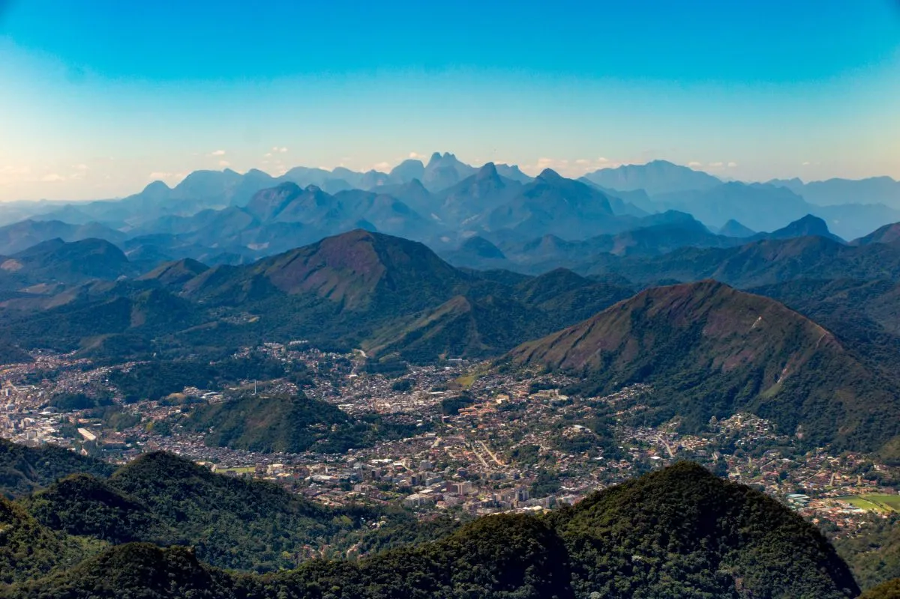
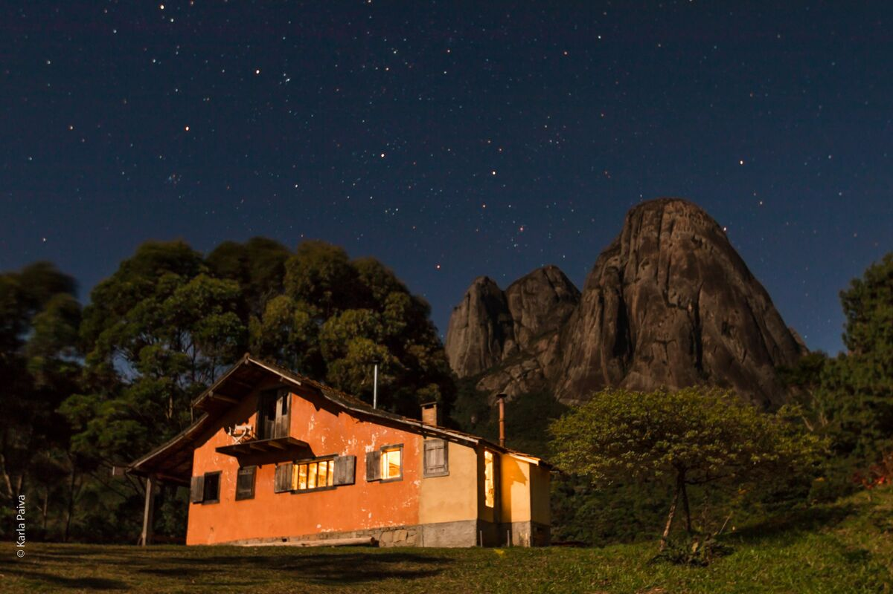

Descubra o Ecoturismo em Teresópolis
O seu guia definitivo para trilhas, cachoeiras e eventos na Região Serrana.
Explore por Categoria
Conheça as principais atrações naturais da nossa cidade.

Aventura
Trilhas Ecológicas
Rotas completas com níveis de dificuldade, distâncias e tempo estimado.
Ver trilhas →
Lazer
Cachoeiras Naturais
Piscinas naturais e quedas d'água próprias para banho na serra.
Ver cachoeiras →
Comunidade
Eventos e Mutirões
Participe de caminhadas ecológicas, palestras e mutirões de preservação.
Ver agenda →